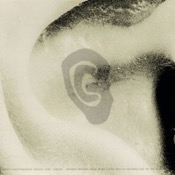
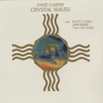
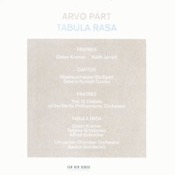
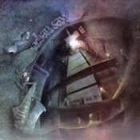
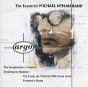
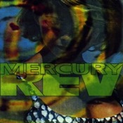
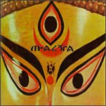
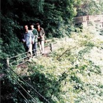

Catalogue de recommandations musicales. Après avoir commencé à découvrir la musique en écoutant du rock progressif, j'ai été marqué par l'écoute des groupes krautrock (Can, NEU!, Faust, Popol Vuh), qui m'a ouvert les portes de la musique expérimentale. Mes goûts ont ensuite glissé vers des sonorités de plus en plus épurées, tout en gardant une empreinte électronique forte dans la composition. Ainsi, l'ambient, le minimalisme et la musique électronique progressive semblent aujourd'hui constituer une part importante de mes affinités musicales. Au gré de mes écoutes, j'ai progressivement délaissé les productions musicales centrées sur les paroles. Ces recommandations concernant essentiellement la musique rock ou issue du rock. Il y a très peu de jazz ou de blues puisqu'il faudrait réaliser le même travail de sélection pour ces genres musicaux.
Les deux premières listes correspondent à ce que j'écoute actuellement. Les albums qui y figurent ne seront pas présents dans les listes de chaque décennie, pour éviter toute redondance.
Cette liste entend proposer des recommandations musicales par album, à raison d'un album par artiste ou groupe.
Cette page HTML s'inspire allègrement de celle proposée par Lamuya et accessible ici : → http://zimina.net/ambient/
Merci de m'avoir permis de réutiliser cet affichage pour construire ma propre bibliothèque !
Les deux premières listes correspondent à ce que j'écoute actuellement. Les albums qui y figurent ne seront pas présents dans les listes de chaque décennie, pour éviter toute redondance.
Cette liste entend proposer des recommandations musicales par album, à raison d'un album par artiste ou groupe.
Cette page HTML s'inspire allègrement de celle proposée par Lamuya et accessible ici : → http://zimina.net/ambient/
Merci de m'avoir permis de réutiliser cet affichage pour construire ma propre bibliothèque !
Ambient & New Age⇡

Steve Roach Structures From Silence (1984) |
Altus 24 Hours (2001) |

Brian Eno Ambient 1: Music for Airports (1978) |

Deuter Ecstasy (1979) |
 Global Communication 76:14 (1994) |
||

Vangelis Papathanassiou L'Apocalypse des animaux (1973) |

Tangerine Dream Zeit (1972) |
Thom Brennan Mist (2000) |

Popol Vuh In den Gärten Pharaos (1971) |

Iasos Angelic Music (1978) |
||
|
Dedekind Cut Tahoe (2018) |

Michael Stearns Planetary Unfolding (1981) |
 David Casper Crystal Waves (1984) |
Syntonic Research, Inc. Environments – Disc 2 (1970) |

Don Slepian The Sea of Bliss (1980) |
Minimalisme⇡
|
Erik Satie (par Pascal Rogé) 3 Gymnopédies & Other Piano Works (1984) |

Arvo Pärt Tabula Rasa (1984) |

Jordan de la Sierra Gymnosphere: Song of the Rose (1977) |

Murcof x Wagner Statea (2016) |

Steve Reich Music for 18 Musicians (1978) |
||
|
Brambles Charcoal (2012) |
Insides Clear Skin (1994) |

Into the Well From the Mouth of the Sun (2015) |
Max Richter Memoryhouse (2002) |

Philip Glass Solo Piano (1989) |
||

Various Artists Piano Cloud Series – Volume Two (2016) |

Blaine L. Reininger & Steven Brown 1890 - 1990: One Hundred Years of Music (1990) |

Arvo Pärt (par Paavo Järvi et l'Estonian National Symphony Orchestra) Summa (2002) |

The Necks Unfold (2017) |
 Urban Sax Urban Sax (1977) |
||
|
 Michael Nyman The Essential Michael Nyman Band (1992) |

Lubomyr Melnyk Fallen Trees (2018) |

Wim Mertens The Belly of an Architect (1987) |

Harold Budd The Pavilion of Dreams (1978) |
Années 1990⇡
|
Boredoms Vision Creation Newsun (1999) |
Talk Talk Laughing Stock (1991) |
Grant Lee Buffalo Grant Lee Buffalo (1993) |

Mercury Rev Yerself Is Steam (1991) |

The Necks Hanging Gardens (1999) |
||
|
 Macha Macha (1998) |

DJ Shadow Endtroducing..... (1996) |

Robert Turman Flux |
Midori Takada Through the Looking Glass |

Daniel W J Mackenzie Every Time Feels Like the Last Time |
||

Robert Rich & Markus Reuter Eleven Questions |

CHVE RASA |
D·K· Distant Images |

Deaf Center Pale Ravine |
Deaf Center Pale Ravine |
||
|
Robert Rich & Markus Reuter Eleven Questions |

CHVE RASA |

D·K· Distant Images |
Deaf Center Pale Ravine |

Deaf Center Pale Ravine |
||
|
 Robert Rich & Markus Reuter Eleven Questions |
Robert Rich & Markus Reuter Eleven Questions |

Robert Rich & Markus Reuter Eleven Questions |
Robert Rich & Markus Reuter Eleven Questions |

Robert Rich & Markus Reuter Eleven Questions |
Colder: Arctic Ambient⇡

Biosphere Substrata |

Pjusk / Sleep Orchestra Drowning in the Sky |

SleepResearch_Facility Deep Frieze |

Thomas Köner Teimo |

Irezumi Endurance |
||

Lull Cold Summer |
Power Ambient⇡

Tim Hecker Harmony in Ultraviolet |

Ekkehard Ehlers Plays John Cassavetes |

Lawrence English Wilderness of Mirrors |

René Margraff phasen |

Miche Along Yurikamome |
||

The Inward Circles Belated Movements for an Unsanctioned Exhumation August 1st 1984 |
Song-Oriented, Warmer⇡

Malibu One Life |

Gigi Masin Talk to the Sea |

Pieter Nooten & Michael Brook Sleeps with the Fishes |
Insides Clear Skin |

Susumu Yokota Sakura |
||

Slowdive Pygmalion |

2muchachos Forest Is Not What It Seems |

The Boats Ballads of the Research Department |

Windy & Carl Consciousness |

Grouper A I A |
Natural Sounds⇡

Jonathan Coleclough Makruna · Minya (B) |

Bethan Kellough Aven |

Geir Jenssen Cho Oyu 8201m: Field Recordings from Tibet |

Ananta Inside My Room, Watching the Rain |

Fennel Resuming the Trail |
Tribal Ambient⇡

Jon Hassell Power Spot (4) |

The Chi Factory The Bamboo Recordings |

Steve Roach Artifacts |

:zoviet*france: Shouting at the Ground |

Muslimgauze Al-Zulfiquar Shaheed |
||

O Yuki Conjugate Peyote |

Omenya Ancient Rites |

Vasilisk Acqua |
Urban Atmospheres⇡

A601-2 Shibuya Hypnagogia |

Black Rain Dark Pool |

Nils Petter Molvær & Moritz von Oswald 1/1 |

Plastikman Consumed |

DJ Spooky Songs of a Dead Dreamer |
||

The Higher Intelligence Agency & Biosphere Birmingham Frequencies |
Darker⇡

Aphex Twin Selected Ambient Works Volume II |

Witxes A Fabric of Beliefs |

Demdike Stare Tryptych |

Nebula Genesis |

Brian Eno Ambient 4: On Land |
||

Seefeel Succour |

Akira Rabelais cxvi (S) (H) |

Caul The Long Dust |

Main Hz |

Dead Voices on Air From Afar All Stars Spark and Glee |
||

Стук бамбука в XI часов Лёгкое дело холод |

Inade The Incarnation of the Solar Architects |

Emeralds Allegory of Allergies |

Klara Lewis Ett |

Jääportit Avarrus |
||

Troum Tjukurrpa |

Symphonies of the Planets 1-5: NASA Voyager Recordings |

Robert Rich & B. Lustmord Stalker |

Neel Phobos |

Hail Architeuthis! Hail Architeuthis! |
||

Maeror Tri Myein |

Xu Cheng Pluto |

U-R-I The Bone Tree Soundtracks, Volume One (+) (I) |

Darren Harper Descend |
Darkest⇡
|
raison d’être The Empty Hollow Unfolds |

Lustmord Heresy |

Bohren & der Club of Gore Black Earth |

Nurse with Wound Soliloquy for Lilith (G) |

Nurse with Wound Lumb’s Sister (G) |
||

Black Swan Aeterna |

Jacob Kirkegaard 4 Rooms |

Asmorod Derelict |

Shinkiro Deep Blue |

<1 17 Miles from Willard |
||

Pinkcourtesyphone Under Chandeliers |

Olhon Sinkhole |

Anji Cheung Spirit as Creature |
Ressources⇡
These categories don’t cover the entire genre! These are still missing from my list:
　　　 ⁘ ListentoThis!
⁘ Deezloader / Deemix / SMLoadr
　　　 ⁘ Cette page s'appelle I Musik en hommage au groupe Kyo (non, pas le groupe français), et de leur album du même nom, sorti en 2017. Le premier morceau, Universal Audio, est un chef-d'oeuvre d'ambience musicale électronique.
　　　 ⁘ Alexandre W. sur Spotify, Last.fm, Rateyourmusic (Sonemic), Discogs et SensCritique
These categories don’t cover the entire genre! These are still missing from my list:
　　　 ⁘ ListentoThis!
⁘ Deezloader / Deemix / SMLoadr
　　　 ⁘ Cette page s'appelle I Musik en hommage au groupe Kyo (non, pas le groupe français), et de leur album du même nom, sorti en 2017. Le premier morceau, Universal Audio, est un chef-d'oeuvre d'ambience musicale électronique.
　　　 ⁘ Alexandre W. sur Spotify, Last.fm, Rateyourmusic (Sonemic), Discogs et SensCritique
☊ ☉